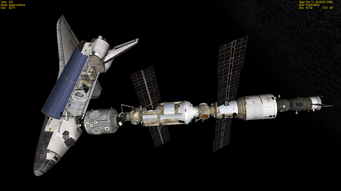
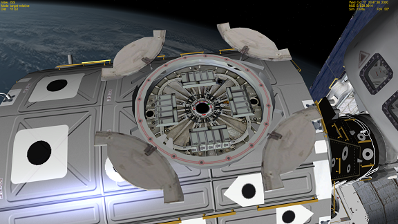
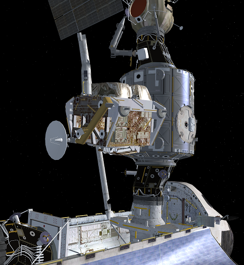
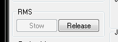
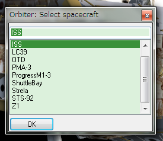
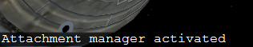
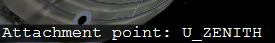
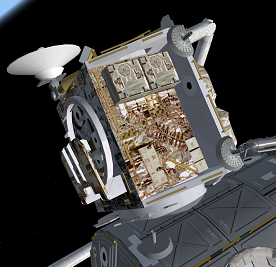
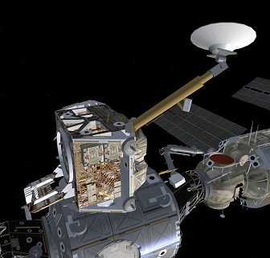

この記事では、ロボットアームとAttachment managerを使った、Z1トラスとPMA3の取り付けについて解説します。
スペースシャトルをISSとドッキングさせる。

Altキーを押しながらキーボードで1を押す。
Altキーを押しながらキーボードで2を押す。

これで、ユニティモジュールのZenith（天頂）およびNadir（天底）側のカバーが開く。
これらモジュールの取り付けには、Attachment managerを使います。
重要：ISSにCMGがインストールされた後のミッションでは、これらの作業の前にISSの回転を必ず止めてください。
(テンキーの5を押す)
Z1トラスをロボットアームで保持して、ISSのエアロックの近くまで運ぶ。※

※Attachment managerを使う場合、大雑把な位置でも結合させることができるので、ドッキングほど神経質にならなくてもよい。
重要：RMSダイアログのReleaseボタンをクリックして、ロボットアームからZ1トラスを外す。

F3キーを押して、ISSを選んでOKをクリック。

Ctrlキーを押しながらAを押す。
左下にAttachment managerの起動メッセージが出る。

キーボードのDを何回か押して、U_ZENITH（ユニティ天頂エアロック）を選択。

Qを押すと、エアロックにZ1トラスが結合される。

同様に、PMA3をユニティモジュールのNadir（天底）エアロックに取り付ける。
重要：Z1トラスのような一部のモジュールは、取り付け後にCtrlキーとSpaceキーの同時押しで有効化する必要がある。
有効化したら、
Ctrl+1でKuバンドアンテナの展開
Ctrl+2でアンビリカルトレイの展開
をそれぞれ実行する。

モジュール同士をドッキングさせる場合を除いて、多くの組み立てミッションでこのようなAttachment managerによる取り付けと、Ctrl+Spaceキーによる有効化が必要になります。